Next: Sliced average variance estimation
Up: Methods available
Previous: Methods available
Sliced inverse regression
Sliced inverse regression, or sir, was proposed by Li (1991); see Cook
(1998, Chapter 11). In sir, we
make use of the fact that given certain assumptions on the marginal
distribution of 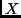1, the inverse regression problem
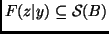. The general computational outline for sir is as follows:
- Examine 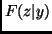 by dividing the range of 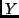 into 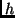 slices,
each with approximately the same number of observations. With a
multivariate response ( has 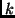 columns), divide the range of
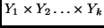 into cells. For example,
when
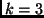, and we slice 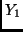 into 3 slices, into 2 slices, and
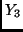 into 4 slices, we will have
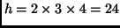 cells.
The number
of slices or cells is a tuning parameter of the procedure.
- Assume that within each slice or cell is approximately
constant. Then the expected value of the within-slice vector of
sample means will be a vector in
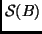.
- Form the 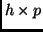 matrix whose 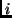-th row is
the vector of weighted sample means in the -th slice.
The matrix 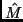
is the 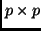 sample covariance matrix of these sample mean
vectors.
sir thus concentrates on the mean function 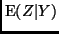, and ignores any
other dependence.
The output given in the last section is an example of typical output for
sir. First is given the eigenvectors and eigenvalues of ; the
eigenvectors have been back-transformed to the original -scale.
Assuming that the dimension is 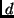, the estimate of
is given by
the first eigenvectors. Also given along with the eigenvectors is the
square of the correlation between the ols fitted values and the first
principal directions. The first direction selected by sir is almost
always about the same as the first direction selected by ols, as is the case
in the example above.
For sir, Li (1991) provided asymptotic tests of dimension based on partial
sums of eigenvalues, and these tests are given in the summary. The tests
have asymptotic Chi-square distributions, with the number of degrees of
freedom shown in the output.
Examining the tests shown in the final output, we see that the
test of 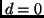 versus 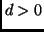 has a very small  -value, so we would
reject . The test for 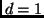 versus 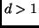 has -value near
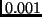, suggesting that is at least 2. The test for 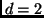
versus 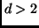 has -value of about 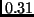, so we suspect that
for this problem. This suggests that further analysis of
this regression problem can be done based on the 3D graph of the
response versus the linear combinations of the predictors
determined by the first two eigenvectors, and the dimension of the
problem can be reduced from 4 to 2 without loss of information.
See Cook (1998), and Cook and Weisberg (1994, 1999), for further
examples and interpretation.
When the response is multivariate, the format of the call is:
-value, so we would
reject . The test for 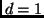 versus 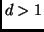 has -value near
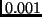, suggesting that is at least 2. The test for 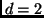
versus 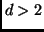 has -value of about 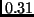, so we suspect that
for this problem. This suggests that further analysis of
this regression problem can be done based on the 3D graph of the
response versus the linear combinations of the predictors
determined by the first two eigenvectors, and the dimension of the
problem can be reduced from 4 to 2 without loss of information.
See Cook (1998), and Cook and Weisberg (1994, 1999), for further
examples and interpretation.
When the response is multivariate, the format of the call is:
m1 <- dr(cbind(LBM,RCC)~Ht+Wt+WCC))
The summary for a multivariate response is similar:
> summary(m1)
Call:
dr(formula = cbind(LBM, RCC) ~ Ht + Wt + WCC)
Terms:
cbind(LBM, RCC) ~ Ht + Wt + WCC
Method:
sir with 9 slices, n = 202, using weights.
Slice Sizes:
24 23 23 23 22 21 22 22 22
Eigenvectors:
Dir1 Dir2 Dir3
Ht 0.4857 0.3879 0.1946
Wt 0.8171 -0.2238 -0.1449
WCC 0.3105 -0.8941 0.9701
Dir1 Dir2 Dir3
Eigenvalues 0.7076 0.05105 0.02168
R^2(LBM|dr) 0.9911 0.99124 1.00000
R^2(RCC|dr) 0.9670 0.97957 1.00000
Asymp. Chi-square tests for dimension:
Stat df p-value
0D vs >= 1D 157.63 24 0.0000
1D vs >= 2D 14.69 14 0.3995
2D vs >= 3D 4.38 6 0.6254
The test statistics are the same as in the univariate response case, as is
the interpretation of the eigenvalues and vectors. The output gives the
squared correlation of each of the responses with the eigenvectors.
Next: Sliced average variance estimation
Up: Methods available
Previous: Methods available
Sandy Weisberg
2002-01-10